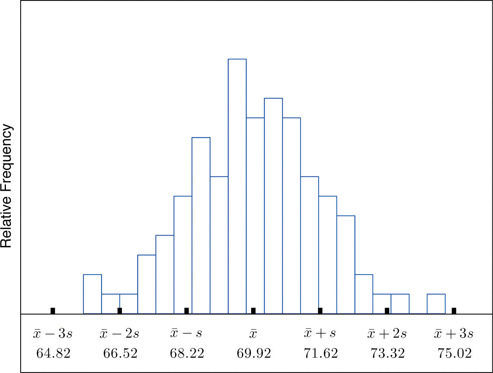
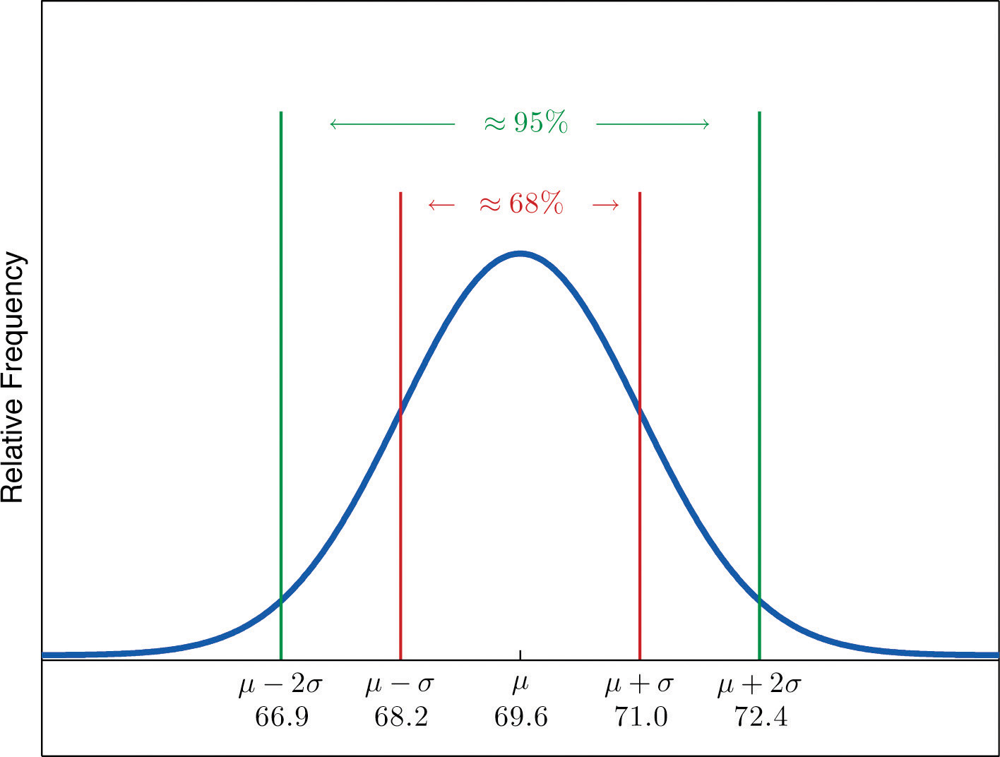
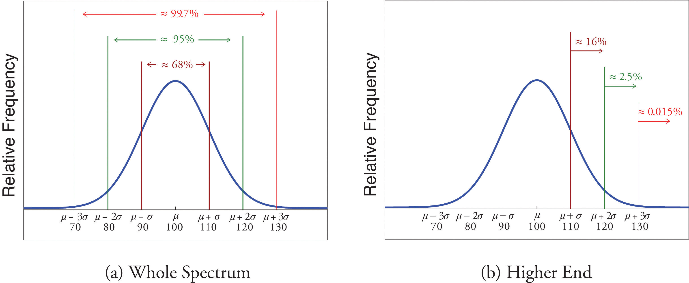
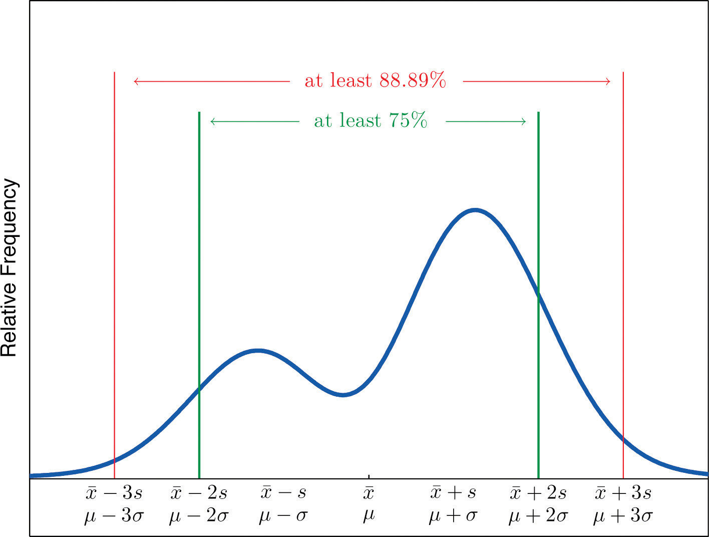

As described in Chapter 1 "Introduction", statistics naturally divides into two branches, descriptive statistics and inferential statistics. Our main interest is in inferential statistics, as shown in Figure 1.1 "The Grand Picture of Statistics" in Chapter 1 "Introduction". Nevertheless, the starting point for dealing with a collection of data is to organize, display, and summarize it effectively. These are the objectives of descriptive statistics, the topic of this chapter.
A well-known adage is that “a picture is worth a thousand words.” This saying proves true when it comes to presenting statistical information in a data set. There are many effective ways to present data graphically. The three graphical tools that are introduced in this section are among the most commonly used and are relevant to the subsequent presentation of the material in this book.
Suppose 30 students in a statistics class took a test and made the following scores:
How did the class do on the test? A quick glance at the set of 30 numbers does not immediately give a clear answer. However the data set may be reorganized and rewritten to make relevant information more visible. One way to do so is to construct a stem and leaf diagram as shown in Figure 2.1 "Stem and Leaf Diagram". The numbers in the tens place, from 2 through 9, and additionally the number 10, are the “stems,” and are arranged in numerical order from top to bottom to the left of a vertical line. The number in the units place in each measurement is a “leaf,” and is placed in a row to the right of the corresponding stem, the number in the tens place of that measurement. Thus the three leaves 9, 8, and 9 in the row headed with the stem 6 correspond to the three exam scores in the 60s, 69 (in the first row of data), 68 (in the third row), and 69 (also in the third row). The display is made even more useful for some purposes by rearranging the leaves in numerical order, as shown in Figure 2.2 "Ordered Stem and Leaf Diagram". Either way, with the data reorganized certain information of interest becomes apparent immediately. There are two perfect scores; three students made scores under 60; most students scored in the 70s, 80s and 90s; and the overall average is probably in the high 70s or low 80s.
Figure 2.1 Stem and Leaf Diagram

Figure 2.2 Ordered Stem and Leaf Diagram

In this example the scores have a natural stem (the tens place) and leaf (the ones place). One could spread the diagram out by splitting each tens place number into lower and upper categories. For example, all the scores in the 80s may be represented on two separate stems, lower 80s and upper 80s:
The definitions of stems and leaves are flexible in practice. The general purpose of a stem and leaf diagram is to provide a quick display of how the data are distributed across the range of their values; some improvisation could be necessary to obtain a diagram that best meets that goal.
Note that all of the original data can be recovered from the stem and leaf diagram. This will not be true in the next two types of graphical displays.
The stem and leaf diagram is not practical for large data sets, so we need a different, purely graphical way to represent data. A frequency histogramA graphical device showing how data are distributed across the range of their values by collecting them into classes and indicating the number of measurements in each class. is such a device. We will illustrate it using the same data set from the previous subsection. For the 30 scores on the exam, it is natural to group the scores on the standard ten-point scale, and count the number of scores in each group. Thus there are two 100s, seven scores in the 90s, six in the 80s, and so on. We then construct the diagram shown in Figure 2.3 "Frequency Histogram" by drawing for each group, or class, a vertical bar whose length is the number of observations in that group. In our example, the bar labeled 100 is 2 units long, the bar labeled 90 is 7 units long, and so on. While the individual data values are lost, we know the number in each class. This number is called the frequencyOf a class of measurements, the number of measurements in the data set that are in the class. of the class, hence the name frequency histogram.
Figure 2.3 Frequency Histogram

The same procedure can be applied to any collection of numerical data. Observations are grouped into several classes and the frequency (the number of observations) of each class is noted. These classes are arranged and indicated in order on the horizontal axis (called the x-axis), and for each group a vertical bar, whose length is the number of observations in that group, is drawn. The resulting display is a frequency histogram for the data. The similarity in Figure 2.1 "Stem and Leaf Diagram" and Figure 2.3 "Frequency Histogram" is apparent, particularly if you imagine turning the stem and leaf diagram on its side by rotating it a quarter turn counterclockwise.
In general, the definition of the classes in the frequency histogram is flexible. The general purpose of a frequency histogram is very much the same as that of a stem and leaf diagram, to provide a graphical display that gives a sense of data distribution across the range of values that appear. We will not discuss the process of constructing a histogram from data since in actual practice it is done automatically with statistical software or even handheld calculators.
In our example of the exam scores in a statistics class, five students scored in the 80s. The number 5 is the frequency of the group labeled “80s.” Since there are 30 students in the entire statistics class, the proportion who scored in the 80s is 5/30. The number 5/30, which could also be expressed as , or as 16.67%, is the relative frequencyOf a class of measurements, the proportion of all measurements in the data set that are in the class. of the group labeled “80s.” Every group (the 70s, the 80s, and so on) has a relative frequency. We can thus construct a diagram by drawing for each group, or class, a vertical bar whose length is the relative frequency of that group. For example, the bar for the 80s will have length 5/30 unit, not 5 units. The diagram is a relative frequency histogramA graphical device showing how data are distributed across the range of their values by collecting them into classes and indicating the proportion of measurements in each class. for the data, and is shown in Figure 2.4 "Relative Frequency Histogram". It is exactly the same as the frequency histogram except that the vertical axis in the relative frequency histogram is not frequency but relative frequency.
Figure 2.4 Relative Frequency Histogram

The same procedure can be applied to any collection of numerical data. Classes are selected, the relative frequency of each class is noted, the classes are arranged and indicated in order on the horizontal axis, and for each class a vertical bar, whose length is the relative frequency of the class, is drawn. The resulting display is a relative frequency histogram for the data. A key point is that now if each vertical bar has width 1 unit, then the total area of all the bars is 1 or 100%.
Although the histograms in Figure 2.3 "Frequency Histogram" and Figure 2.4 "Relative Frequency Histogram" have the same appearance, the relative frequency histogram is more important for us, and it will be relative frequency histograms that will be used repeatedly to represent data in this text. To see why this is so, reflect on what it is that you are actually seeing in the diagrams that quickly and effectively communicates information to you about the data. It is the relative sizes of the bars. The bar labeled “70s” in either figure takes up 1/3 of the total area of all the bars, and although we may not think of this consciously, we perceive the proportion 1/3 in the figures, indicating that a third of the grades were in the 70s. The relative frequency histogram is important because the labeling on the vertical axis reflects what is important visually: the relative sizes of the bars.
When the size n of a sample is small only a few classes can be used in constructing a relative frequency histogram. Such a histogram might look something like the one in panel (a) of Figure 2.5 "Sample Size and Relative Frequency Histograms". If the sample size n were increased, then more classes could be used in constructing a relative frequency histogram and the vertical bars of the resulting histogram would be finer, as indicated in panel (b) of Figure 2.5 "Sample Size and Relative Frequency Histograms". For a very large sample the relative frequency histogram would look very fine, like the one in (c) of Figure 2.5 "Sample Size and Relative Frequency Histograms". If the sample size were to increase indefinitely then the corresponding relative frequency histogram would be so fine that it would look like a smooth curve, such as the one in panel (d) of Figure 2.5 "Sample Size and Relative Frequency Histograms".
Figure 2.5 Sample Size and Relative Frequency Histograms

It is common in statistics to represent a population or a very large data set by a smooth curve. It is good to keep in mind that such a curve is actually just a very fine relative frequency histogram in which the exceedingly narrow vertical bars have disappeared. Because the area of each such vertical bar is the proportion of the data that lies in the interval of numbers over which that bar stands, this means that for any two numbers a and b, the proportion of the data that lies between the two numbers a and b is the area under the curve that is above the interval (a,b) in the horizontal axis. This is the area shown in Figure 2.6 "A Very Fine Relative Frequency Histogram". In particular the total area under the curve is 1, or 100%.
Figure 2.6 A Very Fine Relative Frequency Histogram

Describe one difference between a frequency histogram and a relative frequency histogram.
Describe one advantage of a stem and leaf diagram over a frequency histogram.
Construct a stem and leaf diagram, a frequency histogram, and a relative frequency histogram for the following data set. For the histograms use classes 51–60, 61–70, and so on.
Construct a stem and leaf diagram, a frequency histogram, and a relative frequency histogram for the following data set. For the histograms use classes 6.0–6.9, 7.0–7.9, and so on.
A data set contains n = 10 observations. The values x and their frequencies f are summarized in the following data frequency table.
Construct a frequency histogram and a relative frequency histogram for the data set.
A data set contains the n = 20 observations The values x and their frequencies f are summarized in the following data frequency table.
The frequency of the value 0 is missing. Find a and then sketch a frequency histogram and a relative frequency histogram for the data set.
A data set has the following frequency distribution table:
The number a is unknown. Can you construct a frequency histogram? If so, construct it. If not, say why not.
A table of some of the relative frequencies computed from a data set is
The number p is yet to be computed. Finish the table and construct the relative frequency histogram for the data set.
The IQ scores of ten students randomly selected from an elementary school are given.
Grouping the measures in the 80s, the 90s, and so on, construct a stem and leaf diagram, a frequency histogram, and a relative frequency histogram.
The IQ scores of ten students randomly selected from an elementary school for academically gifted students are given.
Grouping the measures by their common hundreds and tens digits, construct a stem and leaf diagram, a frequency histogram, and a relative frequency histogram.
During a one-day blood drive 300 people donated blood at a mobile donation center. The blood types of these 300 donors are summarized in the table.
Construct a relative frequency histogram for the data set.
In a particular kitchen appliance store an electric automatic rice cooker is a popular item. The weekly sales for the last 20 weeks are shown.
Construct a relative frequency histogram with classes 6–10, 11–15, and 16–20.
Random samples, each of size n = 10, were taken of the lengths in centimeters of three kinds of commercial fish, with the following results:
Grouping the measures by their common hundreds and tens digits, construct a stem and leaf diagram, a frequency histogram, and a relative frequency histogram for each of the samples. Compare the histograms and describe any patterns they exhibit.
During a one-day blood drive 300 people donated blood at a mobile donation center. The blood types of these 300 donors are summarized below.
Identify the blood type that has the highest relative frequency for these 300 people. Can you conclude that the blood type you identified is also most common for all people in the population at large? Explain.
In a particular kitchen appliance store, the weekly sales of an electric automatic rice cooker for the last 20 weeks are as follows.
In retail sales, too large an inventory ties up capital, while too small an inventory costs lost sales and customer satisfaction. Using the relative frequency histogram for these data, find approximately how many rice cookers must be in stock at the beginning of each week if
The vertical scale on one is the frequencies and on the other is the relative frequencies.
Frequency and relative frequency histograms are similarly generated.
Noting that n = 10 the relative frequency table is:
Since n is unknown, a is unknown, so the histogram cannot be constructed.
Frequency and relative frequency histograms are similarly generated.
Noting n = 300, the relative frequency table is therefore:
A relative frequency histogram is then generated.
The stem and leaf diagrams listed for Samples 1, 2, and 3 in that order.
The frequency tables are given below in the same order.
The relative frequency tables are given below in the same order.
This section could be titled “three kinds of averages of a data set.” Any kind of “average” is meant to be an answer to the question “Where do the data center?” It is thus a measure of the central location of the data set. We will see that the nature of the data set, as indicated by a relative frequency histogram, will determine what constitutes a good answer. Different shapes of the histogram call for different measures of central location.
The first measure of central location is the usual “average” that is familiar to everyone. In the formula in the following definition we introduce the standard summation notation Σ, where Σ is the capital Greek letter sigma. In general, the notation Σ followed by a second mathematical symbol means to add up all the values that the second symbol can take in the context of the problem. Here is an example to illustrate this.
Find , , and for the data set
Solution:
In the definition we follow the convention of using lowercase n to denote the number of measurements in a sample, which is called the sample size.
The sample meanThe familiar average of a sample data set. of a set of n sample data is the number defined by the formula
Find the mean of the sample data
Solution:
A random sample of ten students is taken from the student body of a college and their GPAs are recorded as follows.
Find the sample mean.
Solution:
A random sample of 19 women beyond child-bearing age gave the following data, where x is the number of children and f is the frequency of that value, the number of times it occurred in the data set.
Find the sample mean.
Solution:
In this example the data are presented by means of a data frequency table, introduced in Chapter 1 "Introduction". Each number in the first line of the table is a number that appears in the data set; the number below it is how many times it occurs. Thus the value 0 is observed three times, that is, three of the measurements in the data set are 0, the value 1 is observed six times, and so on. In the context of the problem this means that three women in the sample have had no children, six have had exactly one child, and so on. The explicit list of all the observations in this data set is therefore
The sample size can be read directly from the table, without first listing the entire data set, as the sum of the frequencies: The sample mean can be computed directly from the table as well:
In the examples above the data sets were described as samples. Therefore the means were sample means, denoted by If the data come from a census, so that there is a measurement for every element of the population, then the mean is calculated by exactly the same process of summing all the measurements and dividing by how many of them there are, but it is now the population mean and is denoted by μ, the lower case Greek letter mu.
The population meanThe familiar average of a population data set. of a set of N population data is the number μ defined by the formula
The mean of two numbers is the number that is halfway between them. For example, the average of the numbers 5 and 17 is (5 + 17) ∕ 2 = 11, which is 6 units above 5 and 6 units below 17. In this sense the average 11 is the “center” of the data set {5,17}. For larger data sets the mean can similarly be regarded as the “center” of the data.
To see why another concept of average is needed, consider the following situation. Suppose we are interested in the average yearly income of employees at a large corporation. We take a random sample of seven employees, obtaining the sample data (rounded to the nearest hundred dollars, and expressed in thousands of dollars).
The mean (rounded to one decimal place) is , but the statement “the average income of employees at this corporation is $47,400” is surely misleading. It is approximately twice what six of the seven employees in the sample make and is nowhere near what any of them makes. It is easy to see what went wrong: the presence of the one executive in the sample, whose salary is so large compared to everyone else’s, caused the numerator in the formula for the sample mean to be far too large, pulling the mean far to the right of where we think that the average “ought” to be, namely around $24,000 or $25,000. The number 192.5 in our data set is called an outlier, a number that is far removed from most or all of the remaining measurements. Many times an outlier is the result of some sort of error, but not always, as is the case here. We would get a better measure of the “center” of the data if we were to arrange the data in numerical order,
then select the middle number in the list, in this case 24.6. The result is called the median of the data set, and has the property that roughly half of the measurements are larger than it is, and roughly half are smaller. In this sense it locates the center of the data. If there are an even number of measurements in the data set, then there will be two middle elements when all are lined up in order, so we take the mean of the middle two as the median. Thus we have the following definition.
The sample medianThe middle value when data are listed in numerical order. of a set of sample data for which there are an odd number of measurements is the middle measurement when the data are arranged in numerical order. The sample median of a set of sample data for which there are an even number of measurements is the mean of the two middle measurements when the data are arranged in numerical order.
The population median is defined in a similar way, but we will not have occasion to refer to it again in this text.
The median is a value that divides the observations in a data set so that 50% of the data are on its left and the other 50% on its right. In accordance with Figure 2.6 "A Very Fine Relative Frequency Histogram", therefore, in the curve that represents the distribution of the data, a vertical line drawn at the median divides the area in two, area 0.5 (50% of the total area 1) to the left and area 0.5 (50% of the total area 1) to the right, as shown in Figure 2.7 "The Median". In our income example the median, $24,600, clearly gave a much better measure of the middle of the data set than did the mean $47,400. This is typical for situations in which the distribution is skewed. (Skewness and symmetry of distributions are discussed at the end of this subsection.)
Figure 2.7 The Median

Compute the sample median for the data of Note 2.11 "Example 2".
Solution:
The data in numerical order are −1, 0, 2, 2. The two middle measurements are 0 and 2, so
Compute the sample median for the data of Note 2.12 "Example 3".
Solution:
The data in numerical order are
The number of observations is ten, which is even, so there are two middle measurements, the fifth and sixth, which are 2.53 and 2.71. Therefore the median of these data is
Compute the sample median for the data of Note 2.13 "Example 4".
Solution:
The data in numerical order are
The number of observations is 19, which is odd, so there is one middle measurement, the tenth. Since the tenth measurement is 2, the median is
It is important to note that we could have computed the median without first explicitly listing all the observations in the data set. We already saw in Note 2.13 "Example 4" how to find the number of observations directly from the frequencies listed in the table: As just above we figure out that the median is the tenth observation. The second line of the table in Note 2.13 "Example 4" shows that when the data are listed in order there will be three 0s followed by six 1s, so the tenth observation is a 2. The median is therefore 2.
The relationship between the mean and the median for several common shapes of distributions is shown in Figure 2.8 "Skewness of Relative Frequency Histograms". The distributions in panels (a) and (b) are said to be symmetric because of the symmetry that they exhibit. The distributions in the remaining two panels are said to be skewed. In each distribution we have drawn a vertical line that divides the area under the curve in half, which in accordance with Figure 2.7 "The Median" is located at the median. The following facts are true in general:
Figure 2.8 Skewness of Relative Frequency Histograms

Perhaps you have heard a statement like “The average number of automobiles owned by households in the United States is 1.37,” and have been amused at the thought of a fraction of an automobile sitting in a driveway. In such a context the following measure for central location might make more sense.
The sample modeThe most frequent value in a data set. of a set of sample data is the most frequently occurring value.
The population mode is defined in a similar way, but we will not have occasion to refer to it again in this text.
On a relative frequency histogram, the highest point of the histogram corresponds to the mode of the data set. Figure 2.9 "Mode" illustrates the mode.
Figure 2.9 Mode

For any data set there is always exactly one mean and exactly one median. This need not be true of the mode; several different values could occur with the highest frequency, as we will see. It could even happen that every value occurs with the same frequency, in which case the concept of the mode does not make much sense.
Find the mode of the following data set.
Solution:
The value 0 is most frequently observed and therefore the mode is 0.
Compute the sample mode for the data of Note 2.13 "Example 4".
Solution:
The two most frequently observed values in the data set are 1 and 2. Therefore mode is a set of two values: {1,2}.
The mode is a measure of central location since most real-life data sets have more observations near the center of the data range and fewer observations on the lower and upper ends. The value with the highest frequency is often in the middle of the data range.
The mean, the median, and the mode each answer the question “Where is the center of the data set?” The nature of the data set, as indicated by a relative frequency histogram, determines which one gives the best answer.
For the sample data set {1,2,6} find
For the sample data set find
Find the mean, the median, and the mode for the sample
Find the mean, the median, and the mode for the sample
Find the mean, the median, and the mode for the sample
Find the mean, the median, and the mode for the sample
Find the mean, the median, and the mode for the sample data represented by the table
Find the mean, the median, and the mode for the sample data represented by the table
Create a sample data set of size n = 3 for which the mean is greater than the median
Create a sample data set of size n = 3 for which the mean is less than the median
Create a sample data set of size n = 4 for which the mean , the median , and the mode are all identical.
Create a data set of size n = 4 for which the median and the mode are identical but the mean is different.
Find the mean and the median for the LDL cholesterol level in a sample of ten heart patients.
Find the mean and the median, for the LDL cholesterol level in a sample of ten heart patients on a special diet.
Find the mean, the median, and the mode for the number of vehicles owned in a survey of 52 households.
The number of passengers in each of 120 randomly observed vehicles during morning rush hour was recorded, with the following results.
Find the mean, the median, and the mode of this data set.
Twenty-five 1-lb boxes of 16d nails were randomly selected and the number of nails in each box was counted, with the following results.
Find the mean, the median, and the mode of this data set.
Five laboratory mice with thymus leukemia are observed for a predetermined period of 500 days. After 500 days, four mice have died but the fifth one survives. The recorded survival times for the five mice are
where indicates that the fifth mouse survived for at least 500 days but the survival time (i.e., the exact value of the observation) is unknown.
Five laboratory mice with thymus leukemia are observed for a predetermined period of 500 days. After 450 days, three mice have died, and one of the remaining mice is sacrificed for analysis. By the end of the observational period, the last remaining mouse still survives. The recorded survival times for the five mice are
where * indicates that the mouse survived for at least the given number of days but the exact value of the observation is unknown.
A player keeps track of all the rolls of a pair of dice when playing a board game and obtains the following data.
Find the mean, the median, and the mode.
Cordelia records her daily commute time to work each day, to the nearest minute, for two months, and obtains the following data.
An ordered stem and leaf diagram gives the scores of 71 students on an exam.
A man tosses a coin repeatedly until it lands heads and records the number of tosses required. (For example, if it lands heads on the first toss he records a 1; if it lands tails on the first two tosses and heads on the third he records a 3.) The data are shown.
Show that no matter what kind of average is used (mean, median, or mode) it is impossible for all members of a data set to be above average.
Begin with the following set of data, call it Data Set I.
Large Data Set 1 lists the SAT scores and GPAs of 1,000 students.
http://www.gone.2012books.lardbucket.org/sites/all/files/data1.xls
Large Data Set 1 lists the SAT scores of 1,000 students.
http://www.gone.2012books.lardbucket.org/sites/all/files/data1.xls
Large Data Set 1 lists the GPAs of 1,000 students.
http://www.gone.2012books.lardbucket.org/sites/all/files/data1.xls
Large Data Sets 7, 7A, and 7B list the survival times in days of 140 laboratory mice with thymic leukemia from onset to death.
http://www.gone.2012books.lardbucket.org/sites/all/files/data7.xls
http://www.gone.2012books.lardbucket.org/sites/all/files/data7A.xls
http://www.gone.2012books.lardbucket.org/sites/all/files/data7B.xls
, ,
, ,
, ,
{0,0,3}.
{0,1,1,2}.
,
, ,
, ,
, ,
, ,
Mean: so dividing by n yields , so the minimum value is not above average. Median: the middle measurement, or average of the two middle measurements, , is at least as large as , so the minimum value is not above average. Mode: the mode is one of the measurements, and is not greater than itself.
Look at the two data sets in Table 2.1 "Two Data Sets" and the graphical representation of each, called a dot plot, in Figure 2.10 "Dot Plots of Data Sets".
Table 2.1 Two Data Sets
| Data Set I: | 40 | 38 | 42 | 40 | 39 | 39 | 43 | 40 | 39 | 40 |
| Data Set II: | 46 | 37 | 40 | 33 | 42 | 36 | 40 | 47 | 34 | 45 |
Figure 2.10 Dot Plots of Data Sets

The two sets of ten measurements each center at the same value: they both have mean, median, and mode 40. Nevertheless a glance at the figure shows that they are markedly different. In Data Set I the measurements vary only slightly from the center, while for Data Set II the measurements vary greatly. Just as we have attached numbers to a data set to locate its center, we now wish to associate to each data set numbers that measure quantitatively how the data either scatter away from the center or cluster close to it. These new quantities are called measures of variability, and we will discuss three of them.
The first measure of variability that we discuss is the simplest.
The rangeThe variability of a data set as measured by the number of a data set is the number R defined by the formula
where is the largest measurement in the data set and is the smallest.
Find the range of each data set in Table 2.1 "Two Data Sets".
Solution:
For Data Set I the maximum is 43 and the minimum is 38, so the range is
For Data Set II the maximum is 47 and the minimum is 33, so the range is
The range is a measure of variability because it indicates the size of the interval over which the data points are distributed. A smaller range indicates less variability (less dispersion) among the data, whereas a larger range indicates the opposite.
The other two measures of variability that we will consider are more elaborate and also depend on whether the data set is just a sample drawn from a much larger population or is the whole population itself (that is, a census).
The sample variance of a set of n sample data is the number s2 defined by the formula
which by algebra is equivalent to the formula
The sample standard deviationThe variability of sample data as measured by the number . of a set of n sample data is the square root of the sample variance, hence is the number s given by the formulas
Although the first formula in each case looks less complicated than the second, the latter is easier to use in hand computations, and is called a shortcut formula.
Find the sample variance and the sample standard deviation of Data Set II in Table 2.1 "Two Data Sets".
Solution:
To use the defining formula (the first formula) in the definition we first compute for each observation x its deviation from the sample mean. Since the mean of the data is , we obtain the ten numbers displayed in the second line of the supplied table.
Then
so
and
The student is encouraged to compute the ten deviations for Data Set I and verify that their squares add up to 20, so that the sample variance and standard deviation of Data Set I are the much smaller numbers and
Find the sample variance and the sample standard deviation of the ten GPAs in Note 2.12 "Example 3" in Section 2.2 "Measures of Central Location".
Solution:
Since
and
the shortcut formula gives
and
The sample variance has different units from the data. For example, if the units in the data set were inches, the new units would be inches squared, or square inches. It is thus primarily of theoretical importance and will not be considered further in this text, except in passing.
If the data set comprises the whole population, then the population standard deviation, denoted σ (the lower case Greek letter sigma), and its square, the population variance σ2, are defined as follows.
The population variance and population standard deviationThe variability of population data as measured by the number . of a set of N population data are the numbers σ2 and σ defined by the formulas
Note that the denominator in the fraction is the full number of observations, not that number reduced by one, as is the case with the sample standard deviation. Since most data sets are samples, we will always work with the sample standard deviation and variance.
Finally, in many real-life situations the most important statistical issues have to do with comparing the means and standard deviations of two data sets. Figure 2.11 "Difference between Two Data Sets" illustrates how a difference in one or both of the sample mean and the sample standard deviation are reflected in the appearance of the data set as shown by the curves derived from the relative frequency histograms built using the data.
Figure 2.11 Difference between Two Data Sets

The range, the standard deviation, and the variance each give a quantitative answer to the question “How variable are the data?”
Find the range, the variance, and the standard deviation for the following sample.
Find the range, the variance, and the standard deviation for the following sample.
Find the range, the variance, and the standard deviation for the following sample.
Find the range, the variance, and the standard deviation for the following sample.
Find the range, the variance, and the standard deviation for the sample represented by the data frequency table.
Find the range, the variance, and the standard deviation for the sample represented by the data frequency table.
Find the range, the variance, and the standard deviation for the sample of ten IQ scores randomly selected from a school for academically gifted students.
Find the range, the variance and the standard deviation for the sample of ten IQ scores randomly selected from a school for academically gifted students.
Consider the data set represented by the table
Find the sample standard deviation for the data
A random sample of 49 invoices for repairs at an automotive body shop is taken. The data are arrayed in the stem and leaf diagram shown. (Stems are thousands of dollars, leaves are hundreds, so that for example the largest observation is 3,800.)
For these data, ,
What must be true of a data set if its standard deviation is 0?
A data set consisting of 25 measurements has standard deviation 0. One of the measurements has value 17. What are the other 24 measurements?
Create a sample data set of size n = 3 for which the range is 0 and the sample mean is 2.
Create a sample data set of size n = 3 for which the sample variance is 0 and the sample mean is 1.
The sample has mean and standard deviation s = 1. Create a sample data set of size n = 3 for which and s is greater than 1.
The sample has mean and standard deviation s = 1. Create a sample data set of size n = 3 for which and the standard deviation s is less than 1.
Begin with the following set of data, call it Data Set I.
Large Data Set 1 lists the SAT scores and GPAs of 1,000 students.
http://www.gone.2012books.lardbucket.org/sites/all/files/data1.xls
Large Data Set 1 lists the SAT scores of 1,000 students.
http://www.gone.2012books.lardbucket.org/sites/all/files/data1.xls
Large Data Set 1 lists the GPAs of 1,000 students.
http://www.gone.2012books.lardbucket.org/sites/all/files/data1.xls
Large Data Sets 7, 7A, and 7B list the survival times in days of 140 laboratory mice with thymic leukemia from onset to death.
http://www.gone.2012books.lardbucket.org/sites/all/files/data7.xls
http://www.gone.2012books.lardbucket.org/sites/all/files/data7A.xls
http://www.gone.2012books.lardbucket.org/sites/all/files/data7B.xls
R = 3, s2 = 1.7, s = 1.3.
R = 6, , s = 2.7.
R = 6, s2 = 7.3, s = 2.7.
R = 30, s2 = 103.2, s = 10.2.
, s = 1.3.
All are 17.
{1,1,1}
One example is
When you take an exam, what is often as important as your actual score on the exam is the way your score compares to other students’ performance. If you made a 70 but the average score (whether the mean, median, or mode) was 85, you did relatively poorly. If you made a 70 but the average score was only 55 then you did relatively well. In general, the significance of one observed value in a data set strongly depends on how that value compares to the other observed values in a data set. Therefore we wish to attach to each observed value a number that measures its relative position.
Anyone who has taken a national standardized test is familiar with the idea of being given both a score on the exam and a “percentile ranking” of that score. You may be told that your score was 625 and that it is the 85th percentile. The first number tells how you actually did on the exam; the second says that 85% of the scores on the exam were less than or equal to your score, 625.
Given an observed value x in a data set, x is the Pth percentileThe measurement x, if it exists, such that P percent of the data are less than or equal to x. of the data if the percentage of the data that are less than or equal to x is P. The number P is the percentile rankOf a measurement x, the percentage of the data that are less than or equal to x. of x.
What percentile is the value 1.39 in the data set of ten GPAs considered in Note 2.12 "Example 3" in Section 2.2 "Measures of Central Location"? What percentile is the value 3.33?
Solution:
The data written in increasing order are
The only data value that is less than or equal to 1.39 is 1.39 itself. Since 1 is 1∕10 = .10 or 10% of 10, the value 1.39 is the 10th percentile. Eight data values are less than or equal to 3.33. Since 8 is 8∕10 = .80 or 80% of 10, the value 3.33 is the 80th percentile.
The Pth percentile cuts the data set in two so that approximately P% of the data lie below it and % of the data lie above it. In particular, the three percentiles that cut the data into fourths, as shown in Figure 2.12 "Data Division by Quartiles", are called the quartilesOf a data set, the three numbers , , that divide the data approximately into fourths.. The following simple computational definition of the three quartiles works well in practice.
Figure 2.12 Data Division by Quartiles

For any data set:
Find the quartiles of the data set of GPAs of Note 2.12 "Example 3" in Section 2.2 "Measures of Central Location".
Solution:
As in the previous example we first list the data in numerical order:
This data set has n = 10 observations. Since 10 is an even number, the median is the mean of the two middle observations: Thus the second quartile is The lower and upper subsets are
Each has an odd number of elements, so the median of each is its middle observation. Thus the first quartile is , the median of L, and the third quartile is , the median of U.
Adjoin the observation 3.88 to the data set of the previous example and find the quartiles of the new set of data.
Solution:
As in the previous example we first list the data in numerical order:
This data set has 11 observations. The second quartile is its median, the middle value 2.71. Thus The lower and upper subsets are now
The lower set L has median the middle value 1.90, so The upper set has median the middle value 3.71, so
In addition to the three quartiles, the two extreme values, the minimum and the maximum are also useful in describing the entire data set. Together these five numbers are called the five-number summaryOf a data set, the list of the data set:
The five-number summary is used to construct a box plotFor a data set, a diagram constructed using the five-number summary, as in Figure 2.13 "The Box Plot", which graphically summarizes the distribution of the data. as in Figure 2.13 "The Box Plot". Each of the five numbers is represented by a vertical line segment, a box is formed using the line segments at and as its two vertical sides, and two horizontal line segments are extended from the vertical segments marking and to the adjacent extreme values. (The two horizontal line segments are referred to as “whiskers,” and the diagram is sometimes called a “box and whisker plot.”) We caution the reader that there are other types of box plots that differ somewhat from the ones we are constructing, although all are based on the three quartiles.
Figure 2.13 The Box Plot

Note that the distance from to is the length of the interval over which the middle half of the data range. Thus it has the following special name.
The interquartile range (IQR)Of a data set, the difference between the first and third quartiles. is the quantity
Construct a box plot and find the IQR for the data in Note 2.44 "Example 14".
Solution:
From our work in Note 2.44 "Example 14" we know that the five-number summary is
The box plot is

The interquartile range is
Another way to locate a particular observation x in a data set is to compute its distance from the mean in units of standard deviation.
The z-scoreOf a measurement x, the distance of x from the mean in units of standard deviation. of an observation x is the number z given by the computational formula
according to whether the data set is a sample or is the entire population.
The formulas in the definition allow us to compute the z-score when x is known. If the z-score is known then x can be recovered using the corresponding inverse formulas
The z-score indicates how many standard deviations an individual observation x is from the center of the data set, its mean. If z is negative then x is below average. If z is 0 then x is equal to the average. If z is positive then x is above average. See Figure 2.14.
Figure 2.14 x-Scale versus z-Score

Find the z-scores for all ten observations in the GPA sample data in Note 2.12 "Example 3" in Section 2.2 "Measures of Central Location".
Solution:
For these data and s = 0.8674. The first observation x = 1.9 in the data set has z-score
which means that x = 1.90 is 0.8589 standard deviations below the sample mean. The second observation x = 3.00 has z-score
which means that x = 3.00 is 0.4093 standard deviations above the sample mean. Repeating the process for the remaining observations gives the full set of z-scores
Suppose the mean and standard deviation of the GPAs of all currently registered students at a college are μ = 2.70 and σ = 0.50. The z-scores of the GPAs of two students, Antonio and Beatrice, are and z = 1.28, respectively. What are their GPAs?
Solution:
Using the second formula right after the definition of z-scores we compute the GPAs as
Consider the data set
Consider the data set
Consider the data set represented by the ordered stem and leaf diagram
Is the 90th percentile of a data set always equal to 90%? Why or why not?
The 29th percentile in a large data set is 5.
The 54th percentile in a large data set is 98.6.
In a large data set the 29th percentile is 5 and the 79th percentile is 10. Approximately what percentage of observations lie between 5 and 10?
In a large data set the 40th percentile is 125 and the 82nd percentile is 158. Approximately what percentage of observations lie between 125 and 158?
Find the five-number summary and the IQR and sketch the box plot for the sample represented by the stem and leaf diagram in Figure 2.2 "Ordered Stem and Leaf Diagram".
Find the five-number summary and the IQR and sketch the box plot for the sample explicitly displayed in Note 2.20 "Example 7" in Section 2.2 "Measures of Central Location".
Find the five-number summary and the IQR and sketch the box plot for the sample represented by the data frequency table
Find the five-number summary and the IQR and sketch the box plot for the sample represented by the data frequency table
Find the z-score of each measurement in the following sample data set.
Find the z-score of each measurement in the following sample data set.
The sample with data frequency table
has mean and standard deviation s ≈ 2.71. Find the z-score for every value in the sample.
The sample with data frequency table
has mean and standard deviation s ≈ 1.67. Find the z-score for every value in the sample.
For the population
compute each of the following.
For the population
compute each of the following.
A measurement x in a sample with mean and standard deviation s = 3 has z-score z = 2. Find x.
A measurement x in a sample with mean and standard deviation s = 3 has z-score Find x.
A measurement x in a population with mean μ = 2.3 and standard deviation σ = 1.3 has z-score z = 2. Find x.
A measurement x in a sample with mean μ = 2.3 and standard deviation σ = 1.3 has z-score Find x.
The weekly sales for the last 20 weeks in a kitchen appliance store for an electric automatic rice cooker are
The table shows the number of vehicles owned in a survey of 52 households.
For two months Cordelia records her daily commute time to work each day to the nearest minute and obtains the following data:
Cordelia is supposed to be at work at 8:00 a.m. but refuses to leave her house before 7:30 a.m.
The mean score on a standardized grammar exam is 49.6; the standard deviation is 1.35. Dromio is told that the z-score of his exam score is −1.19.
A random sample of 49 invoices for repairs at an automotive body shop is taken. The data are arrayed in the stem and leaf diagram shown. (Stems are thousands of dollars, leaves are hundreds, so that for example the largest observation is 3,800.)
For these data, ,
The stem and leaf diagram shows the time in seconds that callers to a telephone-order center were on hold before their call was taken.
Consider the data set represented by the ordered stem and leaf diagram
For the following stem and leaf diagram the units on the stems are thousands and the units on the leaves are hundreds, so that for example the largest observation is 3,800.
Find the five-number summary for the following sample data.
Find the five-number summary for the following sample data.
For the following stem and leaf diagram the units on the stems are thousands and the units on the leaves are hundreds, so that for example the largest observation is 3,800.
Determine whether the following statement is true. “In any data set, if an observation is greater than another observation , then the z-score of is greater than the z-score of ”
Emilia and Ferdinand took the same freshman chemistry course, Emilia in the fall, Ferdinand in the spring. Emilia made an 83 on the common final exam that she took, on which the mean was 76 and the standard deviation 8. Ferdinand made a 79 on the common final exam that he took, which was more difficult, since the mean was 65 and the standard deviation 12. The one who has a higher z-score did relatively better. Was it Emilia or Ferdinand?
Refer to the previous exercise. On the final exam in the same course the following semester, the mean is 68 and the standard deviation is 9. What grade on the exam matches Emilia’s performance? Ferdinand’s?
Rosencrantz and Guildenstern are on a weight-reducing diet. Rosencrantz, who weighs 178 lb, belongs to an age and body-type group for which the mean weight is 145 lb and the standard deviation is 15 lb. Guildenstern, who weighs 204 lb, belongs to an age and body-type group for which the mean weight is 165 lb and the standard deviation is 20 lb. Assuming z-scores are good measures for comparison in this context, who is more overweight for his age and body type?
Large Data Set 1 lists the SAT scores and GPAs of 1,000 students.
http://www.gone.2012books.lardbucket.org/sites/all/files/data1.xls
Large Data Set 10 records the scores of 72 students on a statistics exam.
http://www.gone.2012books.lardbucket.org/sites/all/files/data10.xls
Large Data Sets 3 and 3A list the heights of 174 customers entering a shoe store.
http://www.gone.2012books.lardbucket.org/sites/all/files/data3.xls
http://www.gone.2012books.lardbucket.org/sites/all/files/data3A.xls
Large Data Sets 7, 7A, and 7B list the survival times in days of 140 laboratory mice with thymic leukemia from onset to death.
http://www.gone.2012books.lardbucket.org/sites/all/files/data7.xls
http://www.gone.2012books.lardbucket.org/sites/all/files/data7A.xls
http://www.gone.2012books.lardbucket.org/sites/all/files/data7B.xls
50%.
, , , , ,
, , , , ,
−1.3, 1.39, 0.4, −0.35, −0.11.
for x = 1, for x = 2, z = 1.48 for x = 7.
16.
4.9.
, , , ,
Emilia: , Ferdinand:
Rosencrantz: z = 2.2, Guildenstern: z = 1.95. Rosencrantz is more overweight for his age and body type.
You probably have a good intuitive grasp of what the average of a data set says about that data set. In this section we begin to learn what the standard deviation has to tell us about the nature of the data set.
We start by examining a specific set of data. Table 2.2 "Heights of Men" shows the heights in inches of 100 randomly selected adult men. A relative frequency histogram for the data is shown in Figure 2.15 "Heights of Adult Men". The mean and standard deviation of the data are, rounded to two decimal places, and s = 1.70. If we go through the data and count the number of observations that are within one standard deviation of the mean, that is, that are between and inches, there are 69 of them. If we count the number of observations that are within two standard deviations of the mean, that is, that are between and inches, there are 95 of them. All of the measurements are within three standard deviations of the mean, that is, between and inches. These tallies are not coincidences, but are in agreement with the following result that has been found to be widely applicable.
Table 2.2 Heights of Men
| 68.7 | 72.3 | 71.3 | 72.5 | 70.6 | 68.2 | 70.1 | 68.4 | 68.6 | 70.6 |
| 73.7 | 70.5 | 71.0 | 70.9 | 69.3 | 69.4 | 69.7 | 69.1 | 71.5 | 68.6 |
| 70.9 | 70.0 | 70.4 | 68.9 | 69.4 | 69.4 | 69.2 | 70.7 | 70.5 | 69.9 |
| 69.8 | 69.8 | 68.6 | 69.5 | 71.6 | 66.2 | 72.4 | 70.7 | 67.7 | 69.1 |
| 68.8 | 69.3 | 68.9 | 74.8 | 68.0 | 71.2 | 68.3 | 70.2 | 71.9 | 70.4 |
| 71.9 | 72.2 | 70.0 | 68.7 | 67.9 | 71.1 | 69.0 | 70.8 | 67.3 | 71.8 |
| 70.3 | 68.8 | 67.2 | 73.0 | 70.4 | 67.8 | 70.0 | 69.5 | 70.1 | 72.0 |
| 72.2 | 67.6 | 67.0 | 70.3 | 71.2 | 65.6 | 68.1 | 70.8 | 71.4 | 70.2 |
| 70.1 | 67.5 | 71.3 | 71.5 | 71.0 | 69.1 | 69.5 | 71.1 | 66.8 | 71.8 |
| 69.6 | 72.7 | 72.8 | 69.6 | 65.9 | 68.0 | 69.7 | 68.7 | 69.8 | 69.7 |
Figure 2.15 Heights of Adult Men
If a data set has an approximately bell-shaped relative frequency histogram, then (see Figure 2.16 "The Empirical Rule")
Figure 2.16 The Empirical Rule

Two key points in regard to the Empirical Rule are that the data distribution must be approximately bell-shaped and that the percentages are only approximately true. The Empirical Rule does not apply to data sets with severely asymmetric distributions, and the actual percentage of observations in any of the intervals specified by the rule could be either greater or less than those given in the rule. We see this with the example of the heights of the men: the Empirical Rule suggested 68 observations between 68.22 and 71.62 inches but we counted 69.
Heights of 18-year-old males have a bell-shaped distribution with mean 69.6 inches and standard deviation 1.4 inches.
Solution:
A sketch of the distribution of heights is given in Figure 2.17 "Distribution of Heights".
By the Empirical Rule the shortest such interval has endpoints and Since
the interval in question is the interval from 66.8 inches to 72.4 inches.
Figure 2.17 Distribution of Heights
Scores on IQ tests have a bell-shaped distribution with mean μ = 100 and standard deviation σ = 10. Discuss what the Empirical Rule implies concerning individuals with IQ scores of 110, 120, and 130.
Solution:
A sketch of the IQ distribution is given in Figure 2.18 "Distribution of IQ Scores". The Empirical Rule states that
Figure 2.18 Distribution of IQ Scores
Since 68% of the IQ scores lie within the interval from 90 to 110, it must be the case that 32% lie outside that interval. By symmetry approximately half of that 32%, or 16% of all IQ scores, will lie above 110. If 16% lie above 110, then 84% lie below. We conclude that the IQ score 110 is the 84th percentile.
The same analysis applies to the score 120. Since approximately 95% of all IQ scores lie within the interval form 80 to 120, only 5% lie outside it, and half of them, or 2.5% of all scores, are above 120. The IQ score 120 is thus higher than 97.5% of all IQ scores, and is quite a high score.
By a similar argument, only 15/100 of 1% of all adults, or about one or two in every thousand, would have an IQ score above 130. This fact makes the score 130 extremely high.
The Empirical Rule does not apply to all data sets, only to those that are bell-shaped, and even then is stated in terms of approximations. A result that applies to every data set is known as Chebyshev’s Theorem.
For any numerical data set,
Figure 2.19 "Chebyshev’s Theorem" gives a visual illustration of Chebyshev’s Theorem.
Figure 2.19 Chebyshev’s Theorem
It is important to pay careful attention to the words “at least” at the beginning of each of the three parts. The theorem gives the minimum proportion of the data which must lie within a given number of standard deviations of the mean; the true proportions found within the indicated regions could be greater than what the theorem guarantees.
A sample of size n = 50 has mean and standard deviation s = 3. Without knowing anything else about the sample, what can be said about the number of observations that lie in the interval (22,34)? What can be said about the number of observations that lie outside that interval?
Solution:
The interval (22,34) is the one that is formed by adding and subtracting two standard deviations from the mean. By Chebyshev’s Theorem, at least 3/4 of the data are within this interval. Since 3/4 of 50 is 37.5, this means that at least 37.5 observations are in the interval. But one cannot take a fractional observation, so we conclude that at least 38 observations must lie inside the interval (22,34).
If at least 3/4 of the observations are in the interval, then at most 1/4 of them are outside it. Since 1/4 of 50 is 12.5, at most 12.5 observations are outside the interval. Since again a fraction of an observation is impossible, x (22,34).
The number of vehicles passing through a busy intersection between 8:00 a.m. and 10:00 a.m. was observed and recorded on every weekday morning of the last year. The data set contains n = 251 numbers. The sample mean is and the sample standard deviation is s = 25. Identify which of the following statements must be true.
Solution:
State the Empirical Rule.
Describe the conditions under which the Empirical Rule may be applied.
State Chebyshev’s Theorem.
Describe the conditions under which Chebyshev’s Theorem may be applied.
A sample data set with a bell-shaped distribution has mean and standard deviation s = 2. Find the approximate proportion of observations in the data set that lie:
A population data set with a bell-shaped distribution has mean μ = 6 and standard deviation σ = 2. Find the approximate proportion of observations in the data set that lie:
A population data set with a bell-shaped distribution has mean μ = 2 and standard deviation σ = 1.1. Find the approximate proportion of observations in the data set that lie:
A sample data set with a bell-shaped distribution has mean and standard deviation s = 1.1. Find the approximate proportion of observations in the data set that lie:
A population data set with a bell-shaped distribution and size N = 500 has mean μ = 2 and standard deviation σ = 1.1. Find the approximate number of observations in the data set that lie:
A sample data set with a bell-shaped distribution and size n = 128 has mean and standard deviation s = 1.1. Find the approximate number of observations in the data set that lie:
A sample data set has mean and standard deviation s = 2. Find the minimum proportion of observations in the data set that must lie:
A population data set has mean μ = 2 and standard deviation σ = 1.1. Find the minimum proportion of observations in the data set that must lie:
A population data set of size N = 500 has mean μ = 5.2 and standard deviation σ = 1.1. Find the minimum number of observations in the data set that must lie:
A sample data set of size n = 128 has mean and standard deviation s = 2. Find the minimum number of observations in the data set that must lie:
A sample data set of size n = 30 has mean and standard deviation s = 2.
A population data set has mean μ = 2 and standard deviation σ = 1.1.
Scores on a final exam taken by 1,200 students have a bell-shaped distribution with mean 72 and standard deviation 9.
Lengths of fish caught by a commercial fishing boat have a bell-shaped distribution with mean 23 inches and standard deviation 1.5 inches.
Hockey pucks used in professional hockey games must weigh between 5.5 and 6 ounces. If the weight of pucks manufactured by a particular process is bell-shaped, has mean 5.75 ounces and standard deviation 0.125 ounce, what proportion of the pucks will be usable in professional games?
Hockey pucks used in professional hockey games must weigh between 5.5 and 6 ounces. If the weight of pucks manufactured by a particular process is bell-shaped and has mean 5.75 ounces, how large can the standard deviation be if 99.7% of the pucks are to be usable in professional games?
Speeds of vehicles on a section of highway have a bell-shaped distribution with mean 60 mph and standard deviation 2.5 mph.
Suppose that, as in the previous exercise, speeds of vehicles on a section of highway have mean 60 mph and standard deviation 2.5 mph, but now the distribution of speeds is unknown.
An instructor announces to the class that the scores on a recent exam had a bell-shaped distribution with mean 75 and standard deviation 5.
The GPAs of all currently registered students at a large university have a bell-shaped distribution with mean 2.7 and standard deviation 0.6. Students with a GPA below 1.5 are placed on academic probation. Approximately what percentage of currently registered students at the university are on academic probation?
Thirty-six students took an exam on which the average was 80 and the standard deviation was 6. A rumor says that five students had scores 61 or below. Can the rumor be true? Why or why not?
For the sample data
and
A sample of size n = 80 has mean 139 and standard deviation 13, but nothing else is known about it.
For the sample data
and
For the sample data set
and
See the displayed statement in the text.
See the displayed statement in the text.
0.95.
By Chebyshev’s Theorem at most 1∕9 of the scores can be below 62, so the rumor is impossible.